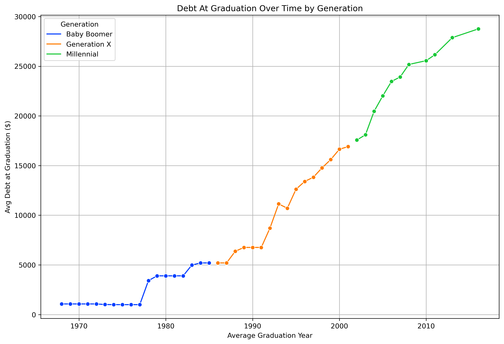
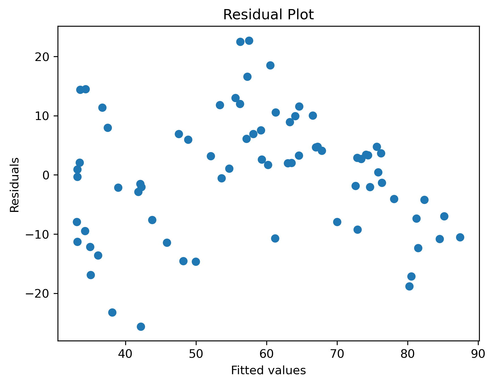

Introduction
As current students, student loans are at the forefront of our minds and loom over us as we juggle the stress of financial burdens and the need for education to grow and succeed in life. Societal pressures push us to graduate college, start our careers, buy a house and start a family. But are Millennials and Gen Z’ers able to fall into place and follow the footsteps of the generations before them? Or are they facing additional challenges with the outstanding debt they’re accumulating with student loans? This project aims to answer our research question: how do differences in student loan debt between older and current generations affect homeownership trends?
Background
Historically, homeownership has been a cornerstone of wealth accumulation for American families as it provides stability and financial security across generations. However, in the aftermath of the Great Recession and amidst rising costs of higher education, younger generations are increasingly burdened by substantial student loan debt. According to recent data, outstanding student loan debt in the United States has surpassed $1.75 trillion, which is a 67% increase from the previous decade (Board of Governors of the Federal Reserve System, 2024). Research has shown that high levels of student debt can delay or reduce the likelihood of homeownership. By comparing older generations (Baby Boomers and Gen X) with younger generations (Millennials), we can better understand how the landscape of student debt has evolved and its implications on long-term financial decisions such as homeownership for younger generations.
Understanding the difference in student loan debt composition across different generations holds personal significance to us as members of the current generations facing the burden of student loans. It speaks to the experiences of students navigating the complexities of higher education financing and the challenges they face in achieving future financial stability, including homeownership. By examining these dynamics, our research aims to empower individuals with knowledge to make informed financial decisions and advocate for systemic reforms.
This study also reflects on the evolving societal norms and expectations surrounding higher education and homeownership. It highlights the shift towards higher education attendance and the resulting increase in student loan debt, which affects traditional milestones such as home ownership. Ultimately, our research contributes to building a more inclusive and resilient society by addressing systemic barriers to economic opportunity and wealth accumulation.
In summary, the proposed research holds significant merit, with the potential to drive positive societal change. A better understanding of generational differences in student loan debt and its implications on homeownership rates can lead to more informed policies, enhanced educational programs, and a more equitable and prosperous future.
Data & Methods
To perform our analysis, we utilized the data from the Federal Reserve and Census surveys within the 1989-2022 time frame. The Federal Reserve survey consisted of age groups, the percentage of those who had a mortgage and the percentage of those with education loans, and was stored in various tabs in an excel spreadsheet. The Census survey, also stored in various tabs in an excel spreadsheet, included age groups, total number of people who were surveyed and the number of homeowners within each age group. To further explore our research question and to supplement our existing tables, we found data on the amount of debt students had at the time of their graduation. This table included graduation year, amount of debt at graduation, average starting salary out of college and the debt to income ratio.
Original Tables
| Feature | Description |
|---|---|
year |
Survey year from 1989-2022 in ncrements of 3 years |
age_group |
Age groups: 18-34, 35-44, 45-54, 55-64, 65-74, 75+ |
percent_mortgage |
Percent of mortgage debt an individual within the age group holds on average |
percent_education_loan |
Percent of education loan debt an indiviudual within the age groups holds on average |
| Feature | Description |
|---|---|
year |
Survey year from 1989-2022 in increments of 3 years |
age_group |
Age groups: 18-24, 25-29, 30-34, 35-39, 40-44, 45-49, 50-54, 55-59, 60-64, 65-69, 70-74, 75+ |
total_surveyed |
Total number of homes surveyed |
total_owner |
Total number of homes surveyed that were owned |
Table 3: Student Debt Student Loan Debt by Year: average debt by year of graduation for students who graduated with a bachelor’s degree Graduating year Average student loan debt Average starting salary after graduation Average debt to income ratio
| Feature | Description |
|---|---|
grad_year |
Graduation year from 1970-2021 in varying increments |
debt_at_grad |
Average student loan debt at graduation |
avg_start_salary |
Average starting salary after graduation |
avg_debt_to_income |
Average debt to average income ratio |
Data Cleaning
The data preparation process involved extensive cleaning and manipulation in Excel and PostgreSQL. It is crucial to emphasize that all data was aggregated, ensuring no sensitive information was included within the datasets. For the Federal Reserve data, we extracted variables such as the survey year, age groups, the percentage of families in that age groups with a mortgage loan, and the percentage of families in that age group with an education loan. Similarly, for the Census data, we extracted the survey year, age groups, the total number of homes surveyed, and the total number of homes that were owned. All these variables were organized in a structured manner to facilitate analysis. It is important to note that the age groups from the Federal Reserve and Census data exhibited overlap, although they were categorized differently. The Federal Reserve data utilized broader age categories, while the Census data employed more granular age bins. Specifically, the Federal Reserve age groups were: less than 35, 35-44, 45-54, 55-64, 65-74, and 75+. In contrast, the Census data age groups were segmented as follows: less than 25, 25-29, 30-34, 35-39, …, 70-74, and 75+.
Once we created these two tables in PostgreSQL, we split each table’s age groups into a minimum age and a maximum age for ease of joining the two tables together. Once we created those new columns in both the Federal Reserve and Census tables, we joined our data on survey year, minimum age, and maximum age, which we treated as primary composite keys. In the join, we ensured that the broader Federal Reserve age ranges were matched with the more granular Census age ranges. Although the join conditions account for overlapping age ranges, there may still be mismatches where age groups did not perfectly align. Additionally, overlaps or gaps in age ranges might lead to duplication of data, which would affect the overall quality and reliability of the dataset.
Upon joining our two tables, we proceeded to integrate generation names for each age range. This involved calculating the minimum and maximum birth years using the survey year along with the minimum and maximum ages. To classify each row into a generational cohort (Traditionalist, Baby Boomer, Generation X, Millennial, or Gen Z), we created a formula to manage overlaps by comparing the minimum and maximum birth years to determine the closest generational boundary alignment for each row. We also created new columns for minimum and maximum graduation years. This was done by assuming the average college graduation age to be 21 and adding this to the minimum and maximum birth years. It’s important to note that using a single average age may lead to inaccuracies in calculating the minimum and maximum graduation years, which could affect subsequent analyses and the classification of individuals into generational cohorts.
Finally, we integrated our student debt dataset, which included variables such as debt at graduation, average starting salary, and debt-to-income ratio by graduation year. The data source did not provide a downloadable file. Consequently, the values were manually entered into Excel and subsequently imported into PostgreSQL for analysis. We aligned each row of our joined dataset to the corresponding debt figures by comparing the minimum and maximum graduation years to determine the closest match to the graduation year in our debt dataset. Although the assignments were done as carefully as possible, there is a chance that some inaccuracies may remain due to variations in actual graduation ages and the potential misalignment of graduation years within the dataset.
As mentioned previously, all the data from the Federal Reserve and Census surveys were anonymized to protect individual privacy, preventing the identification of specific individuals. Additionally, the data was presented in aggregated forms such as percentages and averages, rather than detailed individual records, to further safeguard privacy. However, despite these measures, the potential for bias remains a concern, as survey respondents may not fully represent the entire population, with certain demographics potentially being underrepresented. Additionally, working with aggregated data can weaken the statistical power of analyses and increase the likelihood of Type II errors (failing to detect a true effect) or result in misleading statistics. Regarding data integrity, while the Federal Reserve and Census data were sourced from reputable institutions, our dataset for student debt was obtained from a less reliable source. We acknowledge the limitations of this dataset but feel that its inclusion was crucial for providing a more comprehensive analysis. We advise readers to consider the findings from this source alongside the more robust datasets and to be mindful of the potential impact on our study’s overall conclusions.
Final Dataset
| Feature | Description |
|---|---|
year |
year of survey, in increments of 3 |
census_min_birth_year |
minimum birth year calculated from year and census_min_age |
census_max_birth_year |
maximum birth year calculated from year and census_max_age |
census_generation_name |
generation name derived from census_min_birth_year and census_max_birth_year |
census_min_grad_year |
minimum graduation year derived from census_min_birth_year + 21 years |
census_max_grad_year |
maximum graduation year derived from census_max_birth_year + 21 years |
debt_at_grad |
average debt at year of graduation |
avg_start_salary |
average starting salary post graduation |
avg_debt_to_income |
average debt to income ratio |
census_min_age |
minimum age derived from age group |
census_max_age |
maximum age derived from age group |
total_surveyed |
total number of those surveyed |
total_owner |
total number of those surveyed who own a home |
federal_min_age |
minimum age derived from age group |
federal_max_age |
maximum age derived from age group |
percent_mortgage |
percentage of those surveyed with mortgages |
percent_education_loan |
percentage of those surveyed with education loans |
generation_order |
generations encoded (Baby Boomer = 1, Generation X = 2, Millennial = 3) |
Analysis
To determine how differences in student loan debt between older and current generations affect homeownership trends, we focused on several key variables. Firstly, we examine the debt at graduation (debt_at_grad), which quantifies the amount of student loan debt individuals had upon completing their studies. Additionally, we considered the average debt to income (avg_debt_to_income), which identifies the debt to income ratio for new graduates, and average start salary (avg_start_salary), which identifies the average start salary for new graduates. We also included the generational order (generation_order), identifying whether individuals belong to the Baby Boomers, Generation X, or Millennials. Due to the lack of data compiled for Gen Z, we chose to exclude this generation from our comparative analysis. Two other important variables are the percent of education loans (percent_education_loan) and percent of mortgage loans (percent_mortgage), which represents the proportion of total debt an individual has attributed to education loans and mortgage loans, respectively. Finally, we analyze the homeownership rate (homeownership_rate), calculated by dividing the total number of homes surveyed by the total number of homes owned and multiplying by 100, to determine the proportion of the population that owns a home.
First, we first focused on analyzing the overall trend of student loan debt at graduation by generation. We calculated the average graduation year for each row within our dataset in order to conduct this analysis. Our analysis revealed a clear upward trajectory in graduation debt levels over time for each successive generation, shown in Figure 1. For the Baby Boomers, graduates had relatively low levels of student loan debt, which remained stable and below $5,000 through the 1970s and early 1980s. In contrast, Generation X experienced a noticeable increase in debt levels starting in the late 1980s, with a steady rise through the 1990s, peaking around $15,000 by the early 2000s. This trend continues with Millennials, who faced the highest levels of debt at graduation. Starting in the early 2000s, the average debt for this generation saw a steep increase, surpassing $20,000 and reaching nearly $30,000 by 2015. This escalation in student loan debt across generations highlights a growing financial burden on recent graduates, with Millennials bearing the highest debt load. The data suggests significant changes in higher education financing, economic conditions, and possibly policy impacts over the decades.

Linear Regression Model
To examine the relationship between homeownership rates and average debt at graduation across generations, we utilized a linear regression model. While our primary focus is on the impact of student loan debt by generation on homeownership rates, we included additional features in our model to enhance its robustness and accuracy. In this analysis, the dependent variable was the homeownership rate, while the independent variables included debt at graduation, average debt to income, average start salary, percent mortgage, percent education loan, and generation order. The linear regression model demonstrated a relatively good fit, with an R-squared value of 0.708, indicating that 70.8% of the variability in homeownership rates is explained by the predictors. The adjusted R-sqaured of 0.681 suggests that after accounting for the number of predictors in the model, about 68.1% of the variance is explained, which is still substantial. The F-statistic for the model is 26.67 with a p-value of 6.99e-16, indicating that the model as a whole is statistically significant and provides a good fit for the data. However, for the results of a linear regression analysis to be valid, certain assumptions about the data must be met. These assumptions include linearity, independence, homoscedasticity, normality, and lack of multicollinearity.
Linear Regression Assumptions
The linearity assumption requires that the relationship between the independent variables and the dependent variable is linear. To assess this, we plotted the residuals (errors) against the predicted values to check for any patterns. The residual plot in Figure 2 indicate that the relationships between the dependent and independent variables are approximately linear, suggesting that the linearity assumption is met.

The independence assumption stipulates that the residuals are independent of each other. To test for independent, we used the Durbin-Watson statistics, which tests for autocorrelation in the residuals. Our analysis yield a Durbin-Watson statistic of 1.79. This is relatively close to 2 which suggests that their is little to no evidence of autocorrelation in the residuals. This is a good sign that the residuals are independent and the assumption of independence is likely met.
The homoscedasticity assumption requires that residuals have constant variance across all levels of the independent variable. While Figure 2 shows that this assumption is met, we also plotted the residuals with a horizontal line to show the spread in Figure 3.
The normality assumption requires that the residuals are normally distributed. To assess this, we created a Q-Q plot of the residuals, seen in Figure 4. The points on the Q-Q plot slightly deviate but generally follow the 45-degree line, indicating that the residuals are approximately normally distributed. We also performed the Shapiro-Wilk test for normality and got a test statistics of 0.99 and a p-value of 0.86. Based on these results, there is no significant evidence to suggest that our residuals greatly deviate from a normal distribution. This supports the assumption of normality in our linear regression model.
Multicollinearity occurs when independent variables are highly correlated, which can distort the estimation of regression coefficents. We evaluated multicollinearity using the Variance Inflation Factor (VIF), with all VIF values exceeding 5, signaling a significant concern. To further test this, we analyzed the condition number, which resulted in 9.25e+04, which is relatively high. This issue can compromise the reliability and interpretability of our linear regression model by leading to unstable coefficient estimates and inflated standard errors. Although the other assumptions of the model are satisfied, the presence of multicollinearity necessitates cautious interpretation of our below results.
Linear Regression Coefficient Results
Debt at Graduation (debt_at_grad): The coefficient for debt at graduation is 0.0015 with a p-value of 0.073. Although this coefficient indicates a positive relationship between debt at graduation and the homeownership rate, the p-value exceeds the conventional significance level of 0.05. This suggests that the effect of debt at graduation on homeownership rates is not statistically significant, and therefore, its impact may be minimal or uncertain.
Average Start Salary (avg_start_salar): The coefficient for average starting salary is -0.0013 with a p-value of 0.015. This result is statistically significant, as evidenced by the p-value being less than 0.05. The negative coefficient indicates that higher average starting salaries are associated with a slight decrease in the homeownership rate. This suggests that, contrary to what might be expected, higher starting salaries could be linked to lower homeownership rates, though the magnitude of this effect is relatively small.
Average Debt to Income (avg_debt_to_income): The coefficient for average debt to income is -0.6644 with a p-value of 0.136. The negative coefficient implies that higher debt-to-income ratios are associated with a lower homeownership rate. However, the p-value indicates that this result is not statistically significant at the 0.05 level, suggesting that the observed relationship may not be strong or reliable and could be influenced by other factors not captured by this model.
Percent Mortgage (percent_mortgage): The coefficient for the percentage mortgage is 0.7176 with a p-value less than 0.001. This result is both positive and statistically significant, indicating a robust relationship between a higher percentage of mortgage debt an individual holds and an increased homeownership rate. From a practical standpoint, this result is logical since mortgage debt is a fundamental component of homeownership. Therefore, it is not surprising that an increase in mortgage debt is associated with a higher rate of homeownership. By incorporating this predictor, we aimed to better capture the relationship between mortgage debt and homeownership rates, thereby improving the model’s ability to explain variability in the dependent variable.
Percent Education Loan (percent_education_loan): The coefficient for the percent education loan varaible is 0.6885 with a p-value of 0.046. This positive coefficient, coupled with a p-value less than 0.05, signifies a statistically significant relationship. It suggests that a higher percentage of education loan debt is associated with an increase in the homeownership rate. This result indicates that education loan debt may play a meaningful role in influencing homeownership rates, though the exact nature of this relationship warrants further investigation.
Generation Order (generation_order): The coefficient for generation order is -3.9232 with a p-value of 0.429. This result is not statistically significant, as indicated by the p-value exceeding 0.05. The negative coefficient suggests that the generation order may be inversely related to homeownership rates, but the lack of statistical significance implies that this effect is not robust or meaningful in the context of this model.
The above coefficients offer a nuanced view of how differences in student loan debt between older and current generations affect, homeownership trends, but they do not provide a definitive answer.
Random Forest Model
Given the limitations identified in the linear regression model, we opted to perform a Random Forest analysis to further investigate the relationship between homeownership rates and various predictor variables. The primary motivation for this choice was to address some of the challenges and assumptions inherent in linear regression that may impact the robustness and interpretability of the results. Random Forest models, being ensemble methods based on decision trees, are less sensitive to multicollinearity and do not require the assumptions of linearity, homoscedasticity, or normality of residuals. This makes them a more flexible and robust alternative when dealing with correlated predictors. Overall, the Random Forest model provides an opportunity to validate and complement the findings from our linear regression analysis, offering a more comprehensive approach to analyzing the predictors of homeownership rates and mitigating some of the limitations observed in the linear model.
In this model analysis, we utilized the same dependent and independent variables as our linear regression model. The Mean Squared Error was 88.46, far better than our linear regression MSE score of 139.78. Although an MSE of 88.46 suggests some level of error in the predictions, it is a useful benchmark for comparing the model’s performance with our linear regression model. The R-squared value was 0.726, which signifies that approximately 72.6% of the variability in homeownership rates can be explained by the model.
Random Forest Feature Importance Results
Debt at Graduation (debt_at_grad): With an importance score of 0.094, debt at graduation has a relatively low impact on the model’s predictions compared to other features. This indicates that debt at graduation has a relatively low impact on predicting homeownership rates compared to other features. This suggests that while student loan debt at graduation does play a role, its contribution to explaining homeownership trends is not very significant. Therefore, differences in debt at graduation between generations may not be a major driver of variations in homeownership rates.
Average Start Salary (avg_start_salary): The importance score for average start salary is 0.073, suggesting that this feature has a modest influence on the model. Its impact on predicting homeownership rates is lower compared to some other features.
Average Debt to Income (avg_debt_to_income): The importance score of 0.089 for average debt to income indicates a relatively minor contribution to the model’s predictive power. This feature provides some value, but its effect is not as pronounced as other predictors.
Percent Mortgage (percent_mortgage): With an importance score of 0.590, percent mortgage debt is the most influential feature in the model. As mentioned previously in our linear regression coefficient analysis, this result is to be expected.
Percent Education Loan (percent_education_loan): The importance score of 0.116 suggests that percent education loan debt has a moderate effect on the model. Percent education loan debt has a moderate effect on the model. While it is not as influential as mortgage debt, it still contributes notably to predicting homeownership rates. This suggests that differences in education loan debt between generations may influence homeownership trends to a certain degree, though it is not the primary driver.
Generation Order (generation_order): The importance score of 0.038 indicates that generation order has the least impact on the model’s predictions. Generation order has the least impact on the model’s predictions. This low importance score indicates that the order of generations (or the generational cohort) contributes minimally to explaining variations in homeownership rates. This result suggests that generational differences alone, without considering other factors, have a limited effect on homeownership trends.
To aid in visualizing the importance of different features, we created a plot of their respective importances. We excluded the percent_mortgage variable from this visualization due to its dominance as the most significant feature. As illustrated in Figure 5, the variable debt_at_grad emerges as the second most influential factor in predicting the homeownership rate. This suggests that the amount of student loan debt individuals have when they graduate plays a substantial role in determining their likelihood of owning a home. Higher student loan debt could be a barrier to homeownership, possibly due to the financial burden it places on individuals. Conversely, generation_order ranks as the least significant feature. This implies that, according to the model, the generational sequence (e.g., Baby Boomer, Gen X, Millennials) is not a major factor in predicting homeownership rates compared to the direct financial impacts like student loan debt.
Conclusions
In addressing our research question—how do differences in student loan debt between older and current generations affect homeownership trends?—our study offers both insightful and nuanced perspectives. The historical context and the analysis reveal a complex relationship between student loan debt and homeownership rates. Our findings indicate that student loan debt at graduation (debt_at_grad) is a significant factor influencing homeownership rates. The data shows a clear increase in student loan debt across generations, with Millennials bearing the highest levels, which is likely contributing to the challenges they face in achieving homeownership. Despite the substantial debt load carried by recent graduates, the impact of debt at graduation on homeownership is relatively moderate.
Through linear regression and Random Forest analyses, we confirmed that debt_at_grad has a less pronounced but still notable effect. Percent_education_loan, while less influential than mortgage debt, also plays a role, suggesting that education loan debt does impact homeownership trends to a degree. Interestingly, generation_order, representing the sequence of generations, was found to be the least significant predictor of homeownership rates. This indicates that, within the context of our model, generational cohort alone does not substantially explain variations in homeownership rates compared to the financial burden of student loans and mortgages.
In summary, while student loan debt does impact homeownership trends, it is just one of several factors contributing to the complexity of financial decisions related to homeownership. The rising debt levels faced by Millennials and Gen Z are significant but must be considered alongside other financial elements. Our research underscores the need for a holistic view when analyzing homeownership trends and suggests that addressing the broader financial challenges faced by younger generations may be crucial in facilitating increased homeownership rates.
Bibliography
Board of Governors of the Federal Reserve System (2024). https://www.federalreserve.gov/releases/g19/HIST/cc_hist_memo_levels.html
Survey of consumer finances (SCF). Federal Reserve Board - Survey of Consumer Finances (SCF). (n.d.-b). https://www.federalreserve.gov/econres/scfindex.htm
Bureau, U. C. (2019, April 15). Housing vacancies and homeownership - historical tables. United States Census Bureau. https://www.census.gov/housing/hvs/data/histtabs.html